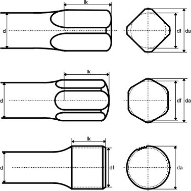

|
|
|


端部形式
按 DIN 2091 定义的扭杆弹簧可具有三种不同的端部形式：矩形、六角形和带齿形。带齿扭杆端部通常按照 DIN 5481 Part 1 或 SAE J 498 b 制造。不过，它们也可以用特殊齿形制造。这些端部的主体形式仅适用于沿轴的单一旋转方向加载的杆件。交变载荷需要采取特殊的设计措施。

图 50.2：扭杆弹簧端部形状（矩形、六角形、带齿形）
Tip forms
Torsion-bar springs as defined in DIN 2091 can have one of three different tip forms: rectangular, hexagonal and toothed. Toothed torsion-bar tips are usually manufactured according to DIN 5481 Part 1 or SAE J 498 b. However, they can also be manufactured with special toothings. The body forms of the tips apply only to bars that are loaded in one shaft rotation direction. Alternating loads require special design measures.
Figure 50.2: Shapes of torsion-bar tips (rectangular, hexagonal, toothed)